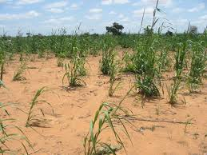

What is alkaline soil?
Alkaline (calcareous) soils have pH > 7.0. High pH can lock out nutrients such as iron, manganese and phosphorus. Some crops tolerate alkaline conditions better than others — below are common choices.
Recommended crops for alkaline soils

Barley
Growth: 90–120 days; Climate: cool-season (rabi/winter in India). Seed rate (default): 35–45 kg/acre.
Alfalfa (Lucerne)
Growth: perennial (first establishment 60–90 days); Climate: temperate to subtropical. Seed rate (default): ~8–10 kg/acre (for pure stand).
Sugar beet
Growth: 120–180 days; Climate: cool-season; Seed rate: pelleted seeds, very low kg weight (usually quoted as number of pelleted seeds per hectare — convert in calculator).

Pearl millet (Bajra)
Growth: 60–90 days; Climate: hot, arid/semi-arid (kharif). Seed rate: 4–5 kg/acre (small-seeded crop).
Notes on climate & soil management
- Alkaline soils often have calcium carbonate; drainage and organic matter help improve nutrient availability.
- Iron and zinc deficiencies are common in high-pH soils — foliar micronutrient sprays or soil sulfur/organic matter can help.
- Always confirm with a soil test (pH and EC) before major amendments.